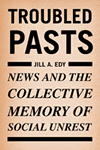

|
Arsenio
Rodríguez and the Transnational Flows of Latin Popular Music
Garcia, David F.
The life and times of one of Cuba's most important musicians
224 pp • 6x9 • Spring 2006
paper 1-59213-386-X
EAN 978-1-59213-386-4
cloth 1-59213-385-1
EAN 978-1-59213-385-7
|
|
Caribbean
Currents
Caribbean Music from Rumba to Reggae
Manuel, Peter, with Kenneth Bilby and Michael Largey The
classic introduction to the Caribbean's popular music brought up
to date
Revised and Expanded Edition
336 pp • 6x9 • Spring 2006
paper 1-59213-463-7
EAN 978-1-59213-463-2
cloth 1-59213-462-9
EAN 978-1-59213-462-5
|
|
Challenging
the Chip
Labor Rights and Environmental Justice in the Global Electronics
Industry
edited by Smith, Ted, David A. Sonnenfeld and David Naguib Pellow,
foreword by Jim Hightower A revealing look at the dark side
of the technology industry
376 pp • 6x9 • Spring 2006
paper 1-59213-330-4
EAN 978-1-59213-330-7
cloth 1-59213-329-0
EAN 978-1-59213-329-1
|
|
City
and Environment
Boone, Christopher G., and Ali Modarres An introduction to
urban environmental issues around the globe
240 pp • 6x9 • Spring 2006
paper 1-59213-284-7
EAN 978-1-59213-284-3
cloth 1-59213-283-9
EAN 978-1-59213-283-6
|

|
The
Forgotten Network
DuMont and the Birth of American Television
Weinstein, David A history of "the forgotten network," as
seen through its own programs and personalities
New in Paperback!
240 pp • 6x9 • Spring 2004
paper 1-59213-499-8
EAN 978-1-59213-499-1
|
|
Forms
in the Abyss
A Philosophical Bridge between Sartre and Derrida
Martinot, Steve How the work of Derrida and Sartre can be
bridged
320 pp • 6x9 • Spring 2006
cloth 1-59213-439-4
EAN 978-1-59213-439-7
|
|
The
Homoerotic Photography of Carl Van Vechten
Public Face, Private Thoughts
Smalls, James The private, interracial, homoerotic photographs
of one of the best-known gay, white promoters of the Harlem Renaissance
240 pp • 7x10 • Spring 2006
cloth 1-59213-305-3
EAN 978-1-59213-305-5
|
|
Jobs
and Economic Development in Minority Communities
edited by Ong, Paul, and Anastasia Loukaitou-Sideris A new
agenda for revitalizing minority neighborhoods
320 pp • 6x9 • Spring 2006
paper 1-59213-410-6
EAN 978-1-59213-410-6
cloth 1-59213-409-2
EAN 978-1-59213-409-0
|

|
Jobs
Aren't Enough
Toward a New Economic Mobility for Low-Income Families
Iversen, Roberta Rehner, and Annie Laurie Armstrong "Job opportunity"
is a myth for 25% of U.S. wage earners
296 pp • 6x9 • Spring 2006
paper 1-59213-356-8
EAN 978-1-59213-356-7
cloth 1-59213-355-X
EAN 978-1-59213-355-0
|
|
Just
a Dog
Understanding Animal Cruelty and Ourselves
Arluke, Arnold How can we make sense of acts of cruelty towards
animals?
232 pp • 6x9 • Spring 2006
paper 1-59213-472-6
EAN 978-1-59213-472-4
cloth 1-59213-471-8
EAN 978-1-59213-471-7
|

|
Las
Hermanas
Chicana/Latina Religious-Political Activism in the U.S. Catholic
Church
Medina, Lara The history of a feminist religious movement
that mobilized the Chicana/Latina community
New in Paperback!
232 pp • 5.5x8.25 • Spring 2004
paper 1-59213-483-1
EAN 978-1-59213-483-0
|

|
Latinos
in New England
edited by Torres, Andres The first comprehensive look at
the growing Latino presence in New England
344 pp • 6x9 • Spring 2006
paper 1-59213-417-3
EAN 978-1-59213-417-5
cloth 1-59213-416-5
EAN 978-1-59213-416-8
|
|
Mayors
and Schools
Minority Voices and Democratic Tensions in Urban Education
Chambers, Stefanie Does mayoral control lead to better urban
schools?
240 pp • 5.5x8.25 • Spring 2006
paper 1-59213-469-6
EAN 978-1-59213-469-4
cloth 1-59213-468-8
EAN 978-1-59213-468-7
|
|
Philadelphia
Maestros
Ormandy, Muti, Sawallisch
Rodríguez-Peralta, Phyllis White The story of the Philadelphia
Orchestra told through three of its greatest conductors
192 pp • 6x8 • Spring 2006
cloth 1-59213-487-4
EAN 978-1-59213-487-8
|
|
The
Philadelphia Reader
edited by Huber, Robert, and Benjamin Wallace, foreword by Buzz Bissinger
A chronicle of the city through the eyes of its most famous citizens,
from the writers of Philadelphia magazine
296 pp • 6x9 • Spring 2006
paper 1-59213-461-0
EAN 978-1-59213-461-8
cloth 1-59213-460-2
EAN 978-1-59213-460-1
|
|
The
Possessive Investment in Whiteness
How White People Profit from Identity Politics
Lipsitz, George A widely influential book-revised to reveal
racial privilege at work in the 21st century
Revised and Expanded Edition
312 pp • 6x9 • Spring 2006
paper 1-59213-494-7
EAN 978-1-59213-494-6
cloth 1-59213-493-9
EAN 978-1-59213-493-9
|
|
The
Scrapbook in American Life
edited by Tucker, Susan, Katherine Ott and Patricia P. Buckler
The first book about the history and practice of keeping scrapbooks
344 pp • 7x10 • Spring 2006
paper 1-59213-478-5
EAN 978-1-59213-478-6
cloth 1-59213-477-7
EAN 978-1-59213-477-9
|
|
Social
Capital in the City
Community and Civic Life in Philadelphia
edited by Dilworth, Richardson The first interdisciplinary
work to examine "social capital" in a single city
256 pp • 6x9 • Spring 2006
paper 1-59213-345-2
EAN 978-1-59213-345-1
cloth 1-59213-344-4
EAN 978-1-59213-344-4
|
|
There
Goes the 'Hood
Views of Gentrification from the Ground Up
Freeman, Lance How does gentrification affect residents who
stay in the neighborhood?
248 pp • 6x9 • Spring 2006
paper 1-59213-437-8
EAN 978-1-59213-437-3
cloth 1-59213-436-X
EAN 978-1-59213-436-6
|

|
Troubled
Pasts
News and the Collective Memory of Social Unrest
Edy, Jill A. How the media shape collective memory and use
that memory to shape our understanding of current events
240 pp • 5.5x8.25 • Spring 2006
paper 1-59213-497-1
EAN 978-1-59213-497-7
cloth 1-59213-496-3
EAN 978-1-59213-496-0
|
|
The
Vietnamese American 1.5 Generation
Stories of War, Revolution, Flight, and New Beginnings
edited by Chan, Sucheng Riveting stories by refugees who
fled Vietnam
344 pp • 6x9 • Spring
2006
paper 1-59213-501-3
EAN 978-1-59213-501-1
cloth 1-59213-500-5
EAN 978-1-59213-500-4
|
Click here
to download the catalog. |